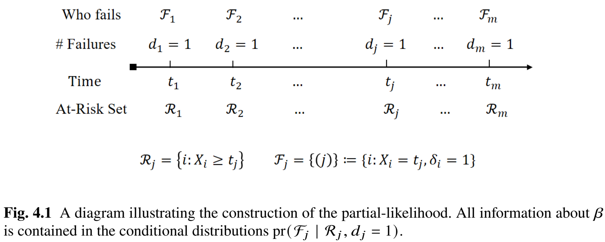

Applied Survival Analysis
Chapter 4 - Cox Proportional Hazards Regression
Department of Biostatistics & Medical Informatics
University of Wisconsin-Madison
Outline
Model specification
Partial-likelihood estimation and inference
Residual analysis and goodness-of-fit
Time-dependent covariates
\[\newcommand{\d}{{\rm d}}\] \[\newcommand{\T}{{\rm T}}\] \[\newcommand{\dd}{{\rm d}}\] \[\newcommand{\pr}{{\rm pr}}\] \[\newcommand{\var}{{\rm var}}\] \[\newcommand{\se}{{\rm se}}\] \[\newcommand{\indep}{\perp \!\!\! \perp}\] \[\newcommand{\Pn}{n^{-1}\sum_{i=1}^n}\]
The Cox Model
Regression Modeling
- Regression vs testing
- Multiple (quantitative) predictors
- Quantify tretment effect
- Cox proportional hazards (PH) model
- Most popular for time-to-event data
- Conditional (covariate-specific) hazard of \(T\) \[
\lambda(t\mid Z)\dd t = \pr(t\leq T < t +\dd t\mid T\geq t, Z)
\]
- \(Z=(Z_{\cdot 1},\ldots, Z_{\cdot p})^\T\): a \(p\)-vector of covariates
- \(\lambda(t\mid z)\): risk for a subject in the sub-population with \(Z = z\)
Cox Proportional Hazards Model
- Model specification \[\begin{equation}\label{eq:cox:model_spec}
\lambda(t\mid Z)=\lambda_0(t)\exp(\beta^\T Z)
\end{equation}\]
- \(\beta=(\beta_1,\ldots,\beta_p)^\T\): \(p\)-dimensional regression coefficients
- \(\lambda_0(t)\): (nonparametric) baseline hazard function
- Proportionality: comparing two covariate groups \[\begin{equation}\label{eq:cox:prop_haz}
\frac{\lambda(t\mid z_i)}{\lambda(t\mid z_j)}=\exp\{\beta^\T (z_i-z_j)\}.
\end{equation}\]
- \(\beta_k\): log-hazard ratio with one unit increase in \(Z_{\cdot k}\) \((k=1,\ldots, p)\)
- one unit increase in \(Z_{\cdot k}\) increases (reduces) risk by \(\exp(\beta_k)\)
- \(\beta_k\): log-hazard ratio with one unit increase in \(Z_{\cdot k}\) \((k=1,\ldots, p)\)
Parametric Sub-Model
Parametrize baseline function \[\begin{equation}\label{eq:cox:ph_param} \lambda(t\mid Z;\theta)=\lambda_0(t;\eta)\exp(\beta^\T Z) \end{equation}\]
- \(\theta=(\beta, \eta)\)
- Weibull PH model \[\begin{equation}\label{eq:cox:weibull_base} \lambda(t\mid Z;\theta)=\alpha\gamma^{-\alpha}t^{\alpha-1}\exp(\beta^\T Z). \end{equation}\]
Estimation
- Maximum likelihood (Chapter 2)
Censored Data and Assumption
- Observed data \[\begin{equation}\label{eq:cox:obs_data}
(X_i, \delta_i, Z_i), \hspace{5mm} i=1,\ldots,n,
\end{equation}\]
- i.i.d. replicates of \((X, \delta, Z)\), where \(X=\min(T, C)\) and \(\delta=I(T\leq C)\)
- Independent censoring (conditional) \[\begin{equation}\label{eq:cox:cond_ind}
(C\indep T)\mid Z.
\end{equation}\]
- Censoring distribution can differ between covariate levels
- Must be independent with outcome within each level
Parametric MLE
- General form of score function (Chapter 2)
- Martingale integral of hazard score \(\partial\log\lambda(t\mid Z,\theta)/\partial\theta\)
- First component: \(\partial\log\lambda(t\mid Z,\theta)/\partial\beta=Z\)
- Score function \[\begin{equation}\label{eq:cox:score}
\Pn\left[\int_0^\infty\left\{Z_i^\T,\frac{\partial}{\partial\eta^\T}\log\lambda_0(t;\hat\eta)\right\}^\T\dd M_i(t;\hat\theta)\right]=0,
\end{equation}\]
- \(\dd M_i(t; \theta)=\dd N_i(t)-I(X_i\geq t)\exp(\beta^\T Z_i)\lambda_0(t;\eta)\dd t\)
- Solve by standard Newton-Raphson algorithm
Semiparametric Model
- Parametric constraints
- Determine shape of baseline function
Semiparametric model
- \(\beta\): parametric covariate effects
- \(\lambda_0(\cdot)\): nonparametric time trend
- Standard MLE does not apply due to nonparametric \(\lambda_0(\cdot)\)
- Partial likelihood
- Focus on data most relevant to covariate effects
- A function of only \(\beta\) not \(\lambda_0(\cdot)\)
Partial Likelihood
Set-up
- Observed event times \(t_1<\cdots<t_m\)
- \(\mathcal F_j =\{(j)\}\): singleton index (assume no ties) for the subject that fails at \(t_j\)
- \(\mathcal R_j\): set of indices for those at risk at \(t_j\)
- Index \(i\) \(\to\) covariates \(Z_i\)

Conditional Information
- Data most informative of \(\beta\)
- Difference in risk between covariate groups
- Identity of failed subject (\(\mathcal F_j\)) given a failure (\(d_j=1\)) among those at risk (\(\mathcal R_j\)) \[\begin{align}\label{eq:cox:cond_lik}
\pr(\mathcal F_j\mid \mathcal R_j,d_j=1)&=\frac{\pr(\mbox{Subject $(j)$ fails given at risk at $t_j$})}{\pr(\mbox{One in $\mathcal R_j$ fails given all at risk at $t_j$})}\notag\\
&\approx\frac{\lambda(t_j\mid Z_{(j)})\dd t_j}{\sum_{i\in\mathcal R_j}\lambda(t_j\mid Z_i)\dd t_j}\notag\\
&=\frac{\exp(\beta^\T Z_{(j)})\lambda_0(t)\dd t_j}{\sum_{i\in\mathcal R_j}\exp(\beta^\T Z_i)\lambda_0(t)\dd t_j}\notag\\
&=\frac{\exp(\beta^\T Z_{(j)})}{\sum_{i\in\mathcal R_j}\exp(\beta^\T Z_i)}
\end{align}\]
- Indeed a function only of \(\beta\)
Partial Likelihood Construction
- Combine over time
Partial likelihood \[\begin{align*} PL_n(\beta)=\prod_{j=1}^m\pr(\mathcal F_j\mid \mathcal R_j,d_j=1) =\prod_{j=1}^m\frac{\exp(\beta^\T Z_{(j)})}{\sum_{i\in\mathcal R_j}\exp(\beta^\T Z_i)} \end{align*}\]
Log-partial likelihood \[\begin{align}\label{eq:cox:pln} pl_n(\beta)=n^{-1}\log PL_n(\beta)&=n^{-1}\sum_{j=1}^m\left\{\beta^\T Z_{(j)}-\log\sum_{i\in\mathcal R_j}\exp(\beta^\T Z_i)\right\}\notag\\ &= n^{-1}\sum_{i=1}^n \delta_i\left\{\beta^\T Z_i- \log\sum_{j=1}^n I(X_j\geq X_i)\exp(\beta^\T Z_j) \right\}\notag\\ &=n^{-1}\sum_{i=1}^n\int_0^\infty \left\{\beta^\T Z_i- \log\sum_{j=1}^n I(X_j\geq t)\exp(\beta^\T Z_j) \right\}\dd N_i(t). \end{align}\]
Maximum Partial-Likelihood (MPLE)
- Estimator: \(\hat\beta=\arg\max_\beta pl_n(\beta)\)
- \(pl_n(\beta)\approx\) log-likelihood of a parametric model
- Partial-likelihood score \[\begin{equation}\label{eq:cox:pl_score}
U_n(\beta)=\frac{\partial}{\partial\beta} pl_n(\beta)
=n^{-1}\sum_{i=1}^n\int_0^\infty \left\{Z_i- \frac{\sum_{j=1}^n I(X_j\geq t)Z_j\exp(\beta^\T Z_j)}{\sum_{j=1}^n I(X_j\geq t)\exp(\beta^\T Z_j)}
\right\}\dd N_i(t)
\end{equation}\]
- Solve \(U_n(\hat\beta)=0\) (by Newton-Raphson)
- Variance by inverse “information”
- \(\hat\var(\hat\beta)=n^{-1}\hat{\mathcal I}^{-1}\)
- \(\hat{\mathcal I}=-\partial U_n(\hat\beta)/\partial\beta\)
Martingale Framework
- Equivalently \[\begin{equation}\label{eq:cox:pl_score_mart}
U_n(\beta)=n^{-1}\sum_{i=1}^n\int_0^\infty \left\{Z_i- \frac{\sum_{j=1}^n I(X_j\geq t)Z_j\exp(\beta^\T Z_j)}{\sum_{j=1}^n I(X_j\geq t)\exp(\beta^\T Z_j)}
\right\}\dd M_i(t;\beta,\Lambda_0),
\end{equation}\]
- \(\dd M_i(t;\beta,\Lambda_0)=\dd N_i(t)-I(X_i\geq t)\exp(\beta^\T Z_i)\dd \Lambda_0(t)\)
- \(\var\{U_n(\beta)\}\) by variance formula for martingale integrals
- Justifies \(\hat\var(\hat\beta)=n^{-1}\hat{\mathcal I}^{-1}\)
Inference on \(\beta\)
- Individual hazard ratio: \(\exp(\beta_k)\) \((k=1,\ldots, p)\)
- 95% CI \[\begin{equation}\label{eq:cox:hr_ci} \left[\exp\left\{\hat\beta_k-1.96\hat\se(\hat\beta_k)\right\}, \exp\left\{\hat\beta_k+1.96\hat\se(\hat\beta_k)\right\}\right] \end{equation}\]
- Joint test of multiple coefficients
- Multiple dummy variables of same categorical predictor (e.g., race groups) \[ H_0:\beta_{(q)}=(\beta_1,\ldots,\beta_q)^\T=0 \]
- Wald test \[\begin{equation}\label{eq:cox:joint_test}
\hat\beta_{(q)}^\T\hat\var(\hat\beta_{(q)})^{-1}\hat\beta_{(q)}\sim\chi_q^2
\end{equation}\]
- \(\hat\var(\hat\beta_{(q)})\): sub-matrix of \(\hat\var(\hat\beta)\)
Breslow Estimator
- Cumulative baseline function \(\Lambda_0(t)\)
- By \(E\{\dd M_i(t;\beta,\Lambda_0)\}=0\): \[\begin{equation}\label{eq:cox:Lambda} \dd \Lambda_0(t)=\frac{E\{\dd N_i(t)\}}{E\{I(X_i\geq t)\exp(\beta^\T Z_i)\}}. \end{equation}\]
- Breslow estimator \[\begin{equation}\label{eq:cox:breslow} \hat\Lambda_0(t)=\int_0^t\frac{\sum_{i=1}^n\dd N_i(s)}{\sum_{i=1}^n I(X_i\geq s)\exp(\hat\beta^\T Z_i)}. \end{equation}\]
Predicting Survival
- Model-based survival function for given \(z\) \[
S(t\mid z;\beta,\Lambda_0)=\exp\left\{-\exp(\beta^\T z)\Lambda_0(t)\right\}
\]
- Plug in parameter estimates \[S(t\mid z;\hat\beta,\hat\Lambda_0)\]
Exercise: Conditional survival
A patient with covariate value \(z\) is censored at time \(c\). Use the fit model to predict his/her future survival probabilities.
Stratified Model
- Stratification: within-stratum comparison
- Sex, race, study center, etc.
- Adjust for confounder without including it as covariate
- No PH assumption across strata
- Conditional hazard in \(l\)th stratum \[\begin{equation}\label{eq:cox:model_strat}
\lambda_l(t\mid Z^{(l)})=\lambda_{0l}(t)\exp(\beta^\T Z^{(l)})
\end{equation}\]
- \(\lambda_{0l}(\cdot)\): Stratum-specific baseline functions
- Need not be proportional (useful in addressing non-proportionality in covariates)
- \(\beta\): Common covariate effects
- Estimation: Use sum of stratum-specific partial-likelihood scores
- \(\lambda_{0l}(\cdot)\): Stratum-specific baseline functions
Software: survival::coxph() (I)
- Basic syntax for Cox model
- Input
Surv(time, status) ~ covariates: \((X, \delta) \sim Z\)strata(str_var): stratified by variablestr_var(optional)
- Output: an object of class
coxphobj$coefficients: \(\hat\beta\)obj$var: \(\hat\var(\hat\beta)\)
Software: survival::coxph() (II)
- Breslow estimates \(\hat\Lambda_0(t)\)
- Output: a data frame
Lambda0$time: \(t\);Lambda0$hazard: \(\hat\Lambda_0(t)\)Lambda0$strata: levels ofstr_varif stratified by it
Software: survival::coxph() (III)
- Summary:
summary(obj)summary(obj)$coefficients: a matrix containing \(\hat\beta\), hazard ratio \(\exp(\hat\beta)\), \(\hat\se(\hat\beta)\), test statistic, and \(p\)-value as columns
- Joint test of multiple coefficients
Software: gtsummary::tbl_regression()
Example: German Breast Cancer (I)
- Endpoint: relapse-free survival

Example: German Breast Cancer (II)
- Model fitting
#--- Data frame ---------------------
head(df)
# id time status hormone age meno size grade nodes prog estrg
# 1 1 43.836066 1 1 38 1 18 3 5 141 105
# 3 2 46.557377 1 1 52 1 20 1 1 78 14
# 5 3 41.934426 1 1 47 1 30 2 1 422 89
# 7 4 4.852459 0 1 40 1 24 1 3 25 11
# 8 5 61.081967 0 2 64 2 19 2 1 19 9
# 9 6 63.377049 0 2 49 2 56 1 3 356 64
#--- Model fitting ------------------
obj <- coxph(Surv(time, status)~ hormone + meno + age + size + grade
+ prog + estrg, data = df)Example: German Breast Cancer (III)
- Summary results
- Hormone-treated women 70.1% times as likely to relapse/die as untreated
#--- Summary results ------------------
summary(obj)
# n= 686, number of events= 299
# coef exp(coef) se(coef) z Pr(>|z|)
# hormone2 -0.3552391 0.7010058 0.1292278 -2.749 0.00598 **
# meno2 0.2683165 1.3077610 0.1840516 1.458 0.14489
# age -0.0087937 0.9912449 0.0093783 -0.938 0.34842
# size 0.0153213 1.0154392 0.0036538 4.193 2.75e-05 ***
# grade2 0.7078888 2.0297017 0.2485544 2.848 0.00440 **
# grade3 0.8171706 2.2640847 0.2689544 3.038 0.00238 **
# prog -0.0022942 0.9977084 0.0005775 -3.972 7.12e-05 ***
# estrg 0.0001788 1.0001789 0.0004686 0.382 0.70274
# ---
# Signif. codes: 0 ‘***’ 0.001 ‘**’ 0.01 ‘*’ 0.05 ‘.’ 0.1 ‘ ’ 1Example: German Breast Cancer (V)
Tumor grade?
- Joint test on
grade2andgrade3 - \(\chi_2^2=9.4\), \(p=0.009\)
- Joint test on
Example: German Breast Cancer (VI)
- Baseline \(\hat\Lambda_0(t)\)
#--- Breslow estimates of baseline function ------------------
Lambda0 <- basehaz(obj, centered = FALSE)
# Plot the baseline hazard function
plot(stepfun(Lambda0$time, c(0, Lambda0$hazard)), do.points = FALSE,
cex.axis = 0.9, lwd = 2, frame.plot = FALSE, xlim = c(0, 100),
ylim = c(0, 0.8), xlab = "Time (months)",
ylab = "Baseline cumulative hazard", main = "")Exercise: Survival prediction
Predict survival function for arbitrary \(z\).
- Use
obj$coefficients(\(\hat\beta\)) andLambda0(\(\hat\Lambda_0(t)\)) - Use
survfit(obj, newdata)
Example: German Breast Cancer (VII)
- Baseline \(\hat\Lambda_0(t)\)
Residual Analyses
Assumptions in Cox Model
- Cox model assumptions \[\begin{equation}
\lambda(t\mid Z)=\lambda_0(t)\exp(\beta^\T Z)
\end{equation}\]
- Proportionality (\(\beta\) is time-constant)
- Functional form of \(Z_{\cdot k}\) (linear? quadratic? categorical?)
- Link function \(\exp(\cdot)\) for \(\beta^\T Z\)
- Residuals
- Observed vs model-predicted
- Model fits data \(\to\) predictions capture systematic trend \(\to\) random residuals
- Pattern in residuals \(\to\) inadequate fit
Cox-Snell Residuals (I)
- Standard result
- \(S(T)\sim\mbox{Unif}[0, 1]\)
- \(\Lambda(T)=-\log S(T) \sim \mbox{Expn}(1)\) (exponential with unit hazard rate)
- Under Cox model \[
\Lambda(t\mid Z;\beta,\Lambda_0)=\exp(\beta^\T Z)\Lambda_0(t)
\]
- \(\Lambda(T\mid Z;\beta,\Lambda_0)\sim \mbox{Expn}(1)\)
- \(\Lambda(X\mid Z;\beta,\Lambda_0)\): Censored version of \(\Lambda(T\mid Z;\beta,\Lambda_0)\sim \mbox{Expn}(1)\)
- \(\{\hat s_i\equiv \Lambda(X_i\mid Z_i;\hat\beta,\hat\Lambda_0), \delta_i\}\): A sample of censored “times” from \(\mbox{Expn}(1)\)
- \(\hat s_i\) \((i=1,\ldots, n)\): Cox-Snell residuals
Cox-Snell Residuals (II)
- Nelsen-Aalen estimates \(\hat\Lambda_{\rm CS}(t)\)
- Based on \((\hat s_i, \delta_i)\) \((i=1,\ldots, n)\)
- Recovers cumulative hazard of \(\mbox{Expn}(1)\), i.e., \(\Lambda(t)=t\)
- Graphical check
- Overall fit: \(\hat\Lambda_{\rm CS}(\hat s_i)\approx \hat s_i\)
- \(\log\hat\Lambda_{\rm CS}(\hat s_i)\) vs \(\log\hat s_i\): straight line passing through origin (similar to Q-Q plot)
- Departure (e.g., curvature) suggests lack of fit
- Doesn’t tell which assumptions are violated
Schoenfeld Residuals (I)
- Defined only for failed subjects \[\begin{equation}\label{eq:cox:schoenfeld}
\hat r_i=Z_i-\mathcal E(X_i;\hat\beta) \hspace{10mm} (\delta_i=1; i=1,\ldots,n).
\end{equation}\]
- \(\mathcal E(t_j;\beta) = E(Z_{(j)}\mid \mathcal R_j, d_j=1)=\frac{\sum_{j=1}^nI(X_j\geq t)Z_j\exp(\beta^\T Z_j)}{\sum_{j=1}^nI(X_j\geq t)\exp(\beta^\T Z_j)}\)
- Observed minus (conditionally) expected covariates
- Sensitive to proportionality (canceling of \(\lambda_0(\cdot)\))
- \(\hat r_{ik}\) (rescaled) vs \(X_i\): mean zero if proportionality holds on \(Z_{\cdot k}\)
- Formal \(\chi^2\) tests based on the \(\hat r_{ik}\) (with proportionality as \(H_0\))
- Serve only as guidelines to graphical results
Schoenfeld Residuals (II)
- In case of non-proportionality
- HR changes over time
- Stratify rather than set as covariate
- Include covariate \(\times\) time interaction, e.g., \(Z_{\cdot k}\log(t)\)
- Choose alternatives over Cox model (Chapter 5)
- Restricted mean life
- Additive hazards
- Proportional odds
- Accelerate failure time (AFT)
Martingale/Deviance Residuals
- Usual residuals: observed response minus expected \[\begin{align*}
M_i(X_i; \hat\beta,\hat\Lambda_0)&=N_i(X_i)-\int_0^{X_i} I(X_i\geq t)\exp(\hat\beta^\T Z_i)\dd \hat\Lambda_0(t)\\
&=\delta_i-\exp(\hat\beta^\T Z_i)\hat\Lambda_0(X_i)
\end{align*}\]
- \(\exp(\hat\beta^\T Z_i)\hat\Lambda_0(X_i)\) is Cox-Snell residual
- Functional form of \(Z_{\cdot k}\): plot \(M_i(X_i; \hat\beta,\hat\Lambda_0)\) against \(Z_{ik}\) \((i=1,\ldots, n)\)
- Inappropriate form \(\to\) transform by log, square root, power, or grouping
- Link function: plot \(M_i(X_i; \hat\beta,\hat\Lambda_0)\) against \(\hat\beta^\T Z_i\)
- Deviance residuals: Standardized/symmetrized martingale residuals \(\to\) outlier detection
Software: survival::resid() (I)
- Basic syntax for Cox model residuals
- Cox-Snell residuals
# Calculate Cox-Snell by martingale residuals
# df: data frame
coxsnellres <- df$status - resid(obj, type = "martingale")
# Compute Nelsen-Aalen estimates for cumulative hazard
fit <- survfit(Surv(coxsnellres, df$status) ~ 1)
Lambda <- cumsum(fit$n.event / fit$n.risk)
# Scatter plot
plot(log(fit$time), log(Lambda), xlab = "log(t)",
ylab = "log-cumulative hazard")
abline(0, 1, lty = 3) # add a dotted reference lineSoftware: survival::cox.zph()
- Output
sch$table: \(\chi^2\) tests of proportionality (each covariate and overall)sch$time: \(m\)-vector of the \(X_i\)sch$y: \((m\times p)\)-matrix of the rescaled \(\hat r_i\)plot(sch): plot the residuals, one covariate per panel
Software: survival::resid() (II)
Martingale/Deviance residuals
df: data framezk: name of covariate of interest
# Get the residuals mart_resid <- resid(obj, type = 'martingale') # n-vector of martingale dev_resid <- resid(obj, type = 'deviance') # n-vector of deviance # Scatter plot residuals against covariate plot(df$zk, mart_resid) lines(lowess(df$zk, mart_resid)) # add a smooth line through points abline(0, 0, lty = 3) # add a dotted reference line
Example: German Breast Cancer (VIII)
- Overall fit - Cox-Snell residuals
# Compute the residuals
coxsnellres <- df$status-resid(obj, type="martingale")
## Then use N-A method to estimate the cumulative
## hazard function for residuals
fit <- survfit(Surv(coxsnellres,df$status) ~ 1)
Htilde <- cumsum(fit$n.event/fit$n.risk)
# Scatter plot
plot(log(fit$time), log(Htilde), xlab="log(t)", frame.plot = FALSE,
ylab="log-cumulative hazard", xlim = c(-8, 2), ylim = c(-8, 2))
abline(0, 1, lty = 3, lwd = 1.5) # add a reference lineExample: German Breast Cancer (IX)
- Overall fit - Cox-Snell residuals

Example: German Breast Cancer (X)
- Proportionality - Schoenfeld residuals
Example: German Breast Cancer (XI)
- Proportionality - Schoenfeld residuals
Example: German Breast Cancer (XII)
- Stratification by tumor grade
Example: German Breast Cancer (XIII)
- Covariate form - Martingale (deviance) residuals
## Martingale residuals
mart_resid <- resid(obj_stra,type = 'martingale')
#plot residuals against, e.g., age
plot(df$age, mart_resid, main='Age', cex.lab=1.2, cex.axis=1.2,
xlab="Age (years)", ylab="Martingale residuals")
lines(lowess(df$age, mart_resid), lwd = 2) # add a smooth line
abline(0, 0, lty = 3, lwd = 2) # add a reference lineExample: German Breast Cancer (XIV)
- Covariate form - Martingale (deviance) residuals
Example: German Breast Cancer (XV)
- Categorize age
- More events in younger women than accounted for by linear age
- Refit model with
agec=1: \(\leq 40\) yrs;agec=2: \((40, 60]\) yrs;agec=3: \(> 60\) yrs
# Call:
# coxph(formula = Surv(time, status) ~ hormone + meno + agec +
# size + prog + estrg + strata(grade), data = df)
# coef exp(coef) se(coef) z Pr(>|z|)
# hormone2 -0.3788600 0.6846415 0.1294642 -2.926 0.00343 **
# meno2 0.2804119 1.3236749 0.1567576 1.789 0.07364 .
# agec2 -0.5315678 0.5876829 0.1984112 -2.679 0.00738 **
# agec3 -0.4965589 0.6086214 0.2497403 -1.988 0.04678 *
# size 0.0164114 1.0165468 0.0036964 4.440 9.00e-06 ***
# prog -0.0022708 0.9977318 0.0005812 -3.907 9.36e-05 ***
# estrg 0.0001254 1.0001254 0.0004718 0.266 0.79041
# ---Example: German Breast Cancer (XVI)
- Categorize age
- Age differences masked by inappropriate linear form (\(p\)-value 0.348)
Example: German Breast Cancer (XVII)
- Tabulate final model
Example: German Breast Cancer (XVIII)
- Final model

Time-Dependent Covariates
Internal vs External Covariates
- Notation: \(Z(t)=\{Z_{\cdot 1}(t),\ldots, Z_{\cdot p}(t)\}^\T\)
- Internal covariates
- Measured on same subject during follow-up, influenced by failure process
- Biomarkers (CD4 cell count), quality of life, other events
- Modeling: current (instantaneous) risk vs covariate history
- Measured on same subject during follow-up, influenced by failure process
- External covariates
- Extraneous factors, changes unaffected by subject’s failure process
- Pre-planned treatment sequence, environmental factors, baseline covariates \(\times\) time
- Modeling: risk profile vs entire covariate path
- Extraneous factors, changes unaffected by subject’s failure process
Internal Covariates
- Modeling target (intensity function) \[
\lambda\{t\mid\overline Z(t)\}\dd t=\pr\{t\leq T<t+\dd t\mid T\geq t, \overline Z(t)\}
\]
- \(\overline Z(t)=\{Z(u): 0\leq u\leq t\}\): covariate path up to \(t\)
- Model specification \[\begin{equation}\label{eq:cox:time_varying_model}
\lambda\{t\mid\overline Z(t)\}=\lambda_0(t)\exp\{\beta^\T Z(t)\}.
\end{equation}\]
- Current risk depends on past only through \(Z(t)\)
- Define \(Z(t)\) to be useful summary of past
- should not be “current” measurements due to delay in cause and effect
- Example: frequency of drug use in past week, month, or year
External Covariates (I)
- Modeling target (hazard function) \[
\lambda(t\mid Z)\dd t=\pr(t\leq T<t+\dd t\mid T\geq t, Z)
\]
- \(Z=\{Z(t):0\leq t\leq \infty\}\): entire covariate path
- Model specification \[\begin{equation}\label{eq:cox:time_varying_model_ex}
\lambda(t\mid Z)=\lambda_0(t)\exp\{\beta^\T Z(t)\}.
\end{equation}\]
- \(Z(t)\): useful summary before \(t\)
- Conditional survival (not applicable to internal covariates) \[ S(t\mid Z)=\exp\left\{-\int_0^t\lambda(s\mid Z)\dd s\right\}=\exp\left[-\int_0^t\exp\{\beta^\T Z(s)\}\lambda_0(s)\dd s\right] \]
External Covariates (II)
- Baseline covariates \(times\) time
- Addressing non-proportionality
- Example: \(Z_{\cdot 1} = 1, 0\)
- Non-proportionality: \(\lambda(t\mid Z_{\cdot 1} =1)/\lambda(t\mid Z_{\cdot 1} =0)\) changes with \(t\)
- Add \(Z_{\cdot 2}(t) = Z_{\cdot 1} t\), then \[\lambda(t\mid Z_{\cdot 1}, Z_{\cdot 2})=\exp\{\beta_1Z_{\cdot 1} + \beta_2Z_{\cdot 2}(t)\}\lambda_0(t)\] So \[ \frac{\lambda(t\mid Z_{\cdot 1}=1)}{\lambda(t\mid Z_{\cdot 1}=0)}=\exp(\beta_1+\beta_2 t) \]
- Hopefully captures temporal pattern of effect size
Estimation and Inference
- Same inference procedure: partial likelihood \[\begin{align*} PL_n(\beta)=\prod_{j=1}^m\frac{\exp\{\beta^\T Z_{(j)}(t_j)\}}{\sum_{i\in\mathcal R_j}\exp\{\beta^\T Z_i(t_j)\}}. \end{align*}\]
- Partial-likelihood score \[
U_n(\beta)=n^{-1}\sum_{i=1}^n\int_0^\infty \left\{Z_i(t)- \frac{\sum_{j=1}^n I(X_j\geq t)Z_j(t)\exp\{\beta^\T Z_j(t)\}}{\sum_{j=1}^n I(X_j\geq t)\exp\{\beta^\T Z_j(t)\}}
\right\}\dd N_i(t)
\]
- Same Newton-Raphson algorithm
Software: survival::coxph() (IV)
- Basic syntax for time-varying covariates
- Input
- Data in counting process (long) format (multiple records per subject)
(start, stop): period during which covariate takes on a particular valueevent: event indicator at timestopevent = 0need not mean censoring (why?)
- Output:
coxphobject
Software: survival::coxph() (V)
Example: Stanford Heart Study (I)
- Heart transplant study (1967–74)
- Population: 103 cardiac patients in transplantation program
- Objective: Evaluate effect of transplant (time-varying) on time from enrollment to death
Example: Stanford Heart Study (II)
- Results
- Adjusting for other predictors, receiving a transplant reduces the risk of mortality by \(1-0.990=1.0\%\) (\(p\)-value 0.974)
# Call:
# coxph(formula = Surv(start, stop, event) ~ age + accpt + surgery +
# transplant, data = heart)
#
# n= 172, number of events= 75
#
# coef exp(coef) se(coef) z Pr(>|z|)
# age 0.02717 1.02754 0.01371 1.981 0.0476 *
# accpt -0.14635 0.86386 0.07047 -2.077 0.0378 *
# surgery -0.63721 0.52877 0.36723 -1.735 0.0827 .
# transplant1 -0.01025 0.98980 0.31375 -0.033 0.9739
---Example: Stanford Heart Study (III)
- Internal or external
- External: if donor matching follows predetermined protocol
- Internal: if donor matching depends on patient’s health status
- Critically ill more likely to receive transplant sooner
- Model diagnostics
- Exercise
Conclusion
Notes (I)
- Partial likelihood
- Original introduced by Sir David R. Cox (Cox, 1972)
- Statistically efficient (\(\S\) 5.2 of Tsiatis, 2006)
- Widely used by statisticians and medical researchers alike
- Residual analysis
- Cox–Snell residuals by Kay (1977)
- Schoenfeld residuals by Schoenfeld (1980, 1982)
- Proportionality tests implemented in
cox.zph()based on Grambsch and Therneau (1994)
Notes (II)
- Time-varying coefficients
- Hazard raio changing over time \[ \lambda\bigl(t \mid Z\bigr) = \lambda_0(t) \exp\bigl\{\beta(t)^\T Z\bigr\} \]
- Covariate \(\times\) time
Summary (I)
- Cox proportional hazards (PH) model \[\begin{equation}
\lambda(t\mid Z)=\lambda_0(t)\exp(\beta^\T Z)
\end{equation}\]
- \(\exp(\beta)\): hazard ratios associated with unit increases in \(Z\)
- \(\hat\beta\): partial-likelihood estimator
- \(\hat\Lambda_0(t)\): Breslow estimator
- Stratification: adjustment without proportionality constraint
- Survival prediction: \(S(t\mid z;\hat\beta,\hat\Lambda_0)\)
- R-function:
survival::coxph() - SAS procedure:
PHREG
Summary (II)
- Residual analysis
- Cox-Snell: Overall fit
df$status - residuals(obj, type = "martingale")
- Schoenfeld: Proportionality
cox.zph(obj)
- Martingale/Deviance: Covariate form, link function, outlier
residuals(obj, type = c("martingale", "deviance"))
- Cox-Snell: Overall fit
- Time-varying covariates
- Internal vs external
coxph(Surv(start, stop, event) ~ covariates)
HW3 (Due Mar 5)
- Problem 4.8
- Problem 4.14
- Problems 4.15 and 4.21
- Extra credit: Problem 4.22